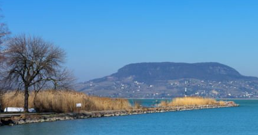
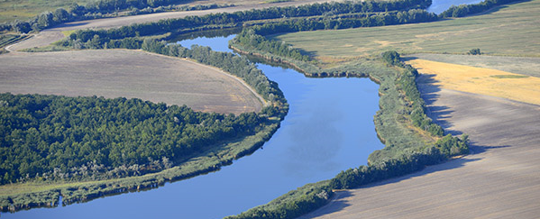

Üdvözöljük oldalunkon!
Balaton
A Balaton Magyarország legismertebb tava. Kiválló program lehetőségeket biztosít az egész család részére. A Balaton lágyan simogató vize elég gyorsan felmelegszik. Még a legnagyobb rekkenő hőségben is kellemes felüdülést kínál minden balatoni nyaralónak. A 26-28 fokos vízhőmérséklet még a fázósaknak is kellemes. Nem kell félni a veszélyes állatfajoktól annak aki a Balatont választja. Nincsenek medúzák, skorpiók, mérgező állatok és növények sem.
Tisza tó
A Tisza-tó Magyarország második legnagyobb tava. Ennek ellenére sok nyaraló fejében egyelőre messze elmarad a Balatontól. Pedig a Tisza-tó csodaszép strandokkal, természetközeli látnivalókkal, kalandos vízitúrákkal tökéletes helyszín a nyaraláshoz. A legtöbb helyen az árak is barátságosabbak, mint a magyar tengernél. Ugyanakkor innen sem hiányoznak a változatos programok és a gasztronómiai élmények sem. A Tisza-tó körül végig jó minőségű biciklis út lett kiépítve, mely javarészt a tó mellett halad végig. A tó körül számos jól kiépített strand található, sok helyen kenut vagy SUP-ot is lehet bérelni.
Szelidi-tó
A Kiskunság legkedveltebb kiránduló- és üdülõhelye. Szelidi-tó 5 km hosszú, 150-200 m széles, 3-4 m mély. Ez az egyetlen mély vizű, szikes jellegű tó hazánkban. Kellemes, lágy, gyorsan felmelegedő lúgos vize van. A strandolás és más vízi élmények mellé a Kékmoszat tanösvény meglátogatását javasoljuk. A 12 állomást felfűző tanösvény bemutatja a tó keletkezését, a víz jellegzetességeit és a benne élő élőlényeket, valamint a környező területek élővilágát.